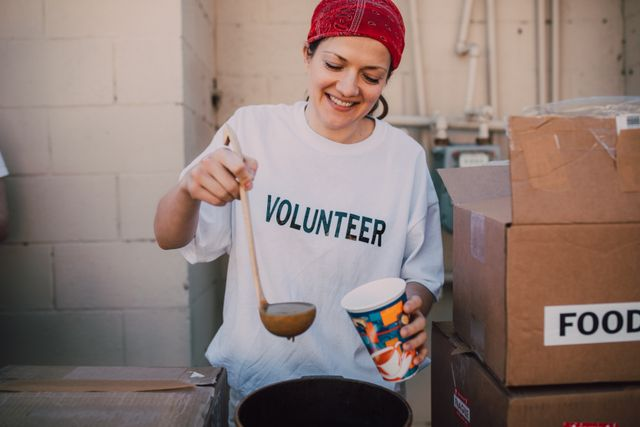
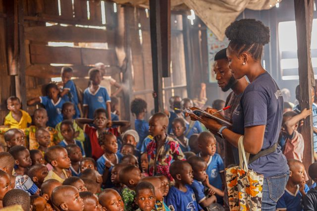
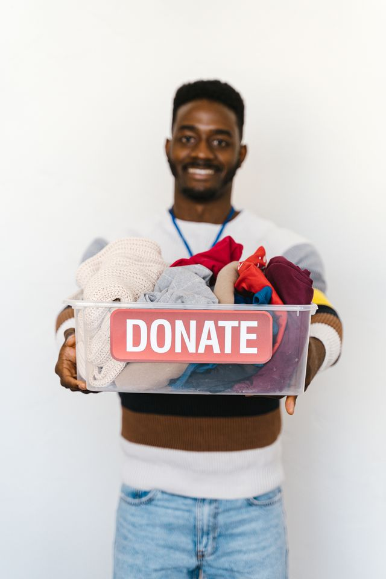
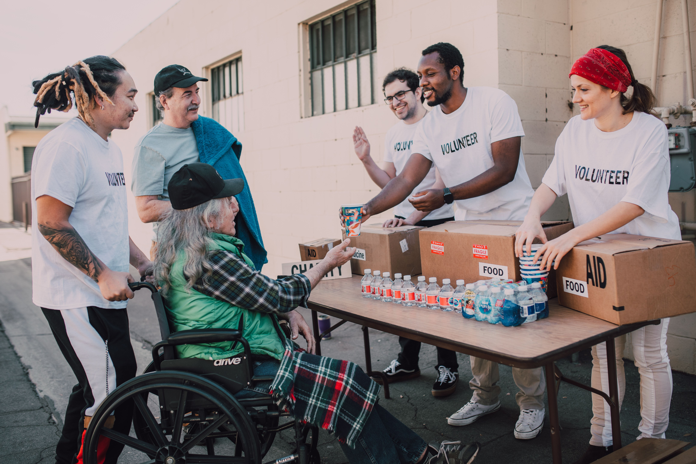

Projeto Alimentar

Arrecadação e distribuição de alimentos para famílias em situação de vulnerabilidade.
Conheça algumas das iniciativas realizadas pela ONG Esperança.

Arrecadação e distribuição de alimentos para famílias em situação de vulnerabilidade.
Objetivo: combater a insegurança alimentar.

Oficinas educativas gratuitas para crianças e jovens.
Objetivo: ampliar o acesso à educação.

Durante o inverno arrecadamos roupas e cobertores para famílias que precisam.
Objetivo: ajudar pessoas durante os períodos de frio.

Reunimos voluntários para realizar ações sociais em diferentes comunidades.
Objetivo: fortalecer a participação social.